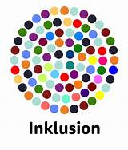
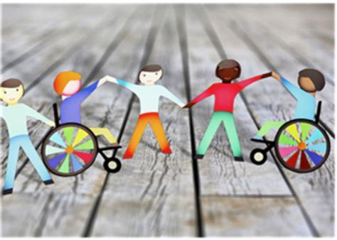

Projekt
- 📅 Projektlaufzeit: 2024 – 2027
- 🎯 Ziel: Inklusives Wohnen und Leben in Rottenburg als Selbstläufer etablieren
- 🤝 Netzwerk von Akteuren mit inklusiven Angeboten und Aktivitäten aufbauen
- 📍 Ort: Yalovastraße 24 – Haus, Hof, Quartier, Stadt
- 💰 Finanzierung: Aktion Mensch e.V. & Stiftung Liebenau gGmbH
- 👥 Initiatoren: Projekt „Inklusiv Wohnen und Leben in Rottenburg“
- 🎬 Koproduktion: FUNKE Tübingen e.V. & Stiftung Liebenau Teilhabe
- 👨💼 Projektleitung: Mario Eich
- 🏠 Hintergrund: Inklusives Wohnhaus seit Oktober 2024
- 🌍 Ziel: Inklusion im Alltag – Arbeit, Freizeit, Bildung, Kultur, Politik
- 🧪 Projekt Vielfalter: Ein Experiment für alle – mitmachen möglich machen

Inklusion
- 🎨 Inklusion bedeutet: Zusammenleben bunt anstreichen
- 🧩 Unterschiede mischen statt sortieren
- 📜 Menschenrecht: UN-Behindertenrechtskonvention seit 2009
- 🚀 Durchbruch? Nur wenn wir ihn gemeinsam umsetzen
- 🎭 Gemeinsam lachen, lernen, feiern, tanzen, leben
- 💡 Motto: Alle sind anders – daraus entsteht Gemeinschaft
- 🌍 Ziel: Eine vielfältige Alltagswelt gemeinsam gestalten
- 🎈 Inklusion ist ein kreatives Abenteuer – real und machbar
Aktivitäten
- 🏠 Open-House: Jour fixe, Feste, Angebote
- 🚶♂️ Außer-Haus: Geselligkeit, Unternehmungen, Shopping
- ⚽ Sport: Bewegung, Training, Spiele
- 🎭 Kultur: Musik, Kunst, Theater, Kino, Lesen, Zirkus
- 🌳 Natur: Garten, Wald, Tiere, Wasser, Berge
- 🎨 Freizeit: Kochen, Musizieren, Basteln, Spielen, Tanzen
- ✈️ Urlaub: Reiseangebote, Tagestouren
- 📚 Bildung: VHS, Bibliothek
- 🗳️ Politik: Mitwirken und Teilhabe
- 🎬 Projekte: Film, Buch, Modenschau, Theater, Musikwerkstatt, Garten
Netzwerk
- 🌆 Rottenburg: Lebendige Stadt mit engagierten Akteuren
- 🎨 Bereiche: Vereine, Gastronomie, Handel, Gewerbe, Kultur, Bildung, Politik
- 🔍 Ziel: Angebote für alle zugänglich machen
- 🎲 Kreativer Prozess durch Zusammenarbeit
- 💡 Neue, interessante und witzige inklusive Angebote entstehen
- 👥 Beispiele für Akteure: [hier ergänzen]
Mit-Wirken
- 🎉 Lust auf außergewöhnliche Begegnungen?
- 😊 Überraschungen, Leichtigkeit, Spaß und Kreativität erleben
- 🧪 Mitwirken im Gemeinschafts-Experiment Leben
- ✅ Teilnehmen und Teilhabe ermöglichen
- 🛠️ Inklusive Angebote gestalten
- 🔗 Netzwerkarbeit unterstützen
- 📢 Öffentlichkeitsarbeit und Werbung
- 💡 Inspirieren und anstiften
- 💰 Finanzieren und fördern
- 🙋♂️ Ehrenamtlich mitwirken – Möglichkeiten erweitern
- 📞 Unverbindlich melden – wir freuen uns!
Impressum
Angaben gemäß § 5 TMG
Vielfalter Projektteam
Yalovastraße 24
72108 Rottenburg
Datenschutzerklärung
Wir nehmen den Schutz Ihrer persönlichen Daten sehr ernst. Personenbezogene Daten werden vertraulich und entsprechend der gesetzlichen Datenschutzvorschriften behandelt.